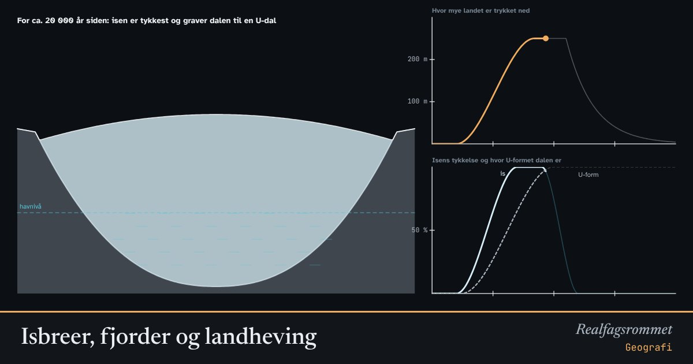

Isbreer, fjorder og landheving
Under istida gravde isbreer de norske dalene om fra V-form til U-form, dypere enn havet. Isen var så tung at den presset landet ned. Da den smeltet, strømmet havet inn, og etterpå har landet sakte hevet seg.
Start animasjonen
Formler
Om animasjonen
Figuren er et tverrsnitt av en dal. Fjellsidene er overdrevet bratte, og høydene er omtrentlige. En elv graver smalt og dypt og lager en V-dal. En isbre fyller hele dalen, sliper sidene og bunnen og lager en U-dal.
Isen kunne være flere kilometer tykk. Tyngden presset jordskorpa ned flere hundre meter. Da isen smeltet, sto landet lavt, og havet nådde høyt opp i dalene. Det høyeste havet nådde, kalles marin grense. Rundt Oslo ligger den omtrent 220 meter over dagens havnivå.
Leiren som ble avsatt i havet, ligger i dag på land. Når salt vaskes ut av slik leire, kan den bli kvikkleire, som kan bli flytende ved skred.
Grafen viser hvor mye landet er trykket ned. Etter at isen forsvant, har landet hevet seg raskt i starten og saktere og saktere etterpå. Det hever seg fortsatt noen millimeter i året mange steder i Norge.
Prøv dette
- Beskriv forskjellen på en V-dal og en U-dal. Hvilke krefter har laget dem?
- Hvorfor er mange norske fjorder dypere enn havet utenfor?
- Hvorfor finner vi skjell og havleire flere hundre meter over havet på Østlandet?
- Hva har landhevingen å si for faren for kvikkleireskred?
Kompetansemål
- Geografi: Isbreer, landformer og landheving